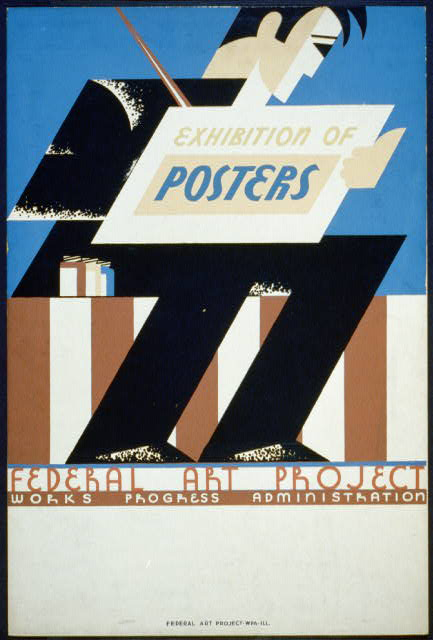

"This picture is a piece of art trying to promote the wide selection of posters from various artists. In the image, a man appears to be sitting down holding a sign saying Exhibition Posters. The poster in particular is made by the Federal Art Project which is suggested to be working with the Works Progress Administration. The image uses an interesting palette of colors to draw attention to the different posters displayed. The main colors presented in this image are black, blue, brown/tan, and white."